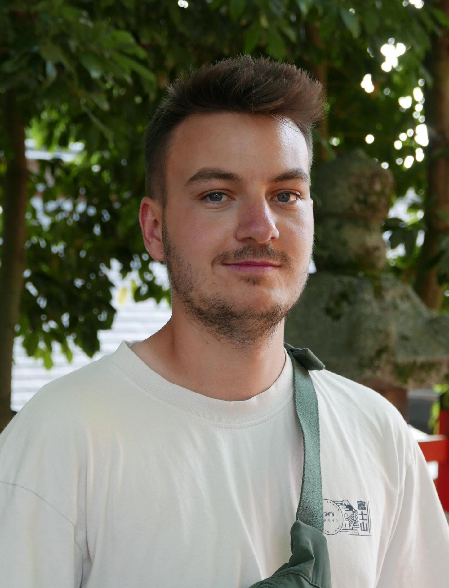

|
I am a PhD student in the Intuitive Robots Lab (IRL) at the Karlsruhe Institute of Technology (KIT), Germany. My research focuses on Imitation Learning and Foundation Models for Human-Robot-Interaction. I am supervised by Rudolf Lioutikov. I obtained my Master's Degree in Computer Science at the KIT. During my studies I interned at SAP SE and IONOS. Email / Google Scholar / Github / LinkedIn |
 |
{kind=link}
|
My research focuses on Foundation Models and their applications in Robotics. In particular, I explore how we can employ Foundation models robustly and reliably in challenging robotic scenarios. Furthermore, my research focuses on goal driven explainability and how we can leverage foundation models for improved human-robot interaction. |

Nils Blank, Moritz Reuss, Marcel Rühle, Ömer Erdinç Yağmurlu, Fabian Wenzel, Oier Mees, Rudolf Lioutikov CoRL 2024 Paper Link We introduce a novel approach to automatically label uncurated, long-horizon robot teleoperation data at scale in a zero-shot manner without any human intervention. We utilize a combination of pre-trained vision-language foundation models to detect objects in a scene, propose possible tasks, segment tasks from large datasets of unlabelled interaction data and then train language-conditioned policies on the relabeled datasets. Our initial experiments show that our method enables training language-conditioned policies on unlabeled and unstructured datasets that match ones trained with oracle human annotations. |
|
The website is based on the code from source code! |